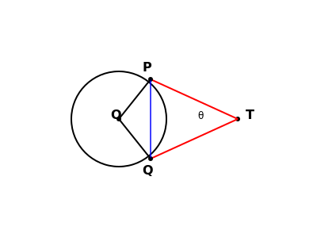

Example 1. Prove that in two concentric circles, the chord of the larger circle, which
touches the smaller circle, is bisected at the point of contact.

Given: Two concentric circles \(C_1\) (larger) and
\(C_2\) (smaller) with center O. Chord AB of circle \(C_1\) touches circle \(C_2\) at point P.
To Prove: The chord AB is bisected at the point of
contact P (i.e., AP = PB).
Construction: Join OP.
Proof:
AB is a tangent to the smaller circle \(C_2\) at point P and OP is the radius.
According to Theorem 10.1 (Radius is perpendicular to
tangent):
OP \(\perp\) AB.
Now, consider the larger circle \(C_1\).
AB is a chord of circle \(C_1\) and OP \(\perp\) AB.
We know that the perpendicular drawn from the center to a chord bisects the chord.
Therefore, AP = PB.
Final Conclusion: Hence, the chord is bisected at the
point of contact.
Example 2. Two tangents TP and TQ are drawn to a circle with centre O from an external
point T. Prove that ∠PTQ = 2 ∠OPQ.

Given: A circle with center O. An external point T.
Two tangents TP and TQ.
To Prove: \(\angle PTQ = 2 \angle OPQ\).
Proof:
Let \(\angle PTQ = \theta\).
TP and TQ are tangents drawn from an external point T.
According to Theorem 10.2 (Lengths of tangents from
external point are equal):
\(TP = TQ\).
So, \(\triangle TPQ\) is an isosceles triangle.
Therefore, \(\angle TPQ = \angle TQP\).
Sum of angles in a triangle is \(180^\circ\). So, \(\angle TPQ + \angle TQP + \angle PTQ =
180^\circ\).
\(2\angle TPQ + \theta = 180^\circ \Rightarrow 2\angle TPQ = 180^\circ - \theta\).
\(\angle TPQ = \frac{1}{2}(180^\circ - \theta) = 90^\circ - \frac{\theta}{2}\).
Also, according to Theorem 10.1 (Radius is perpendicular
to tangent):
\(\angle OPT = 90^\circ\).
Now, \(\angle OPQ = \angle OPT - \angle TPQ\).
\(\angle OPQ = 90^\circ - (90^\circ - \frac{\theta}{2})\).
\(\angle OPQ = \frac{\theta}{2}\).
\(\theta = 2 \angle OPQ \Rightarrow \angle PTQ = 2 \angle OPQ\).
Final Conclusion: Hence Proved.
Example 3. PQ is a chord of length 8 cm of a circle of radius 5 cm. The tangents at P and
Q intersect at a point T. Find the length TP.

Given: Chord PQ = 8 cm. Radius OP = 5 cm. Tangents at
P and Q intersect at T.
To Find: Length of tangent TP.
Construction: Join OT (intersecting PQ at R).
Solution:
\(\triangle TPQ\) is an isosceles triangle (Since TP = TQ).
OT is the angle bisector of \(\angle PTQ\).
Therefore, OT is perpendicular bisector of chord PQ. So, \(OT \perp PQ\).
So, PR = RQ = \(\frac{8}{2} = 4\) cm.
In right-angled \(\triangle ORP\) (By Pythagoras Theorem):
\(OR = \sqrt{OP^2 - PR^2} = \sqrt{5^2 - 4^2} = \sqrt{25 - 16} = \sqrt{9} = 3\) cm.
Let length TP = \(x\) and length TR = \(y\).
In right-angled \(\triangle PRT\): \(TP^2 = TR^2 + PR^2\).
\(x^2 = y^2 + 4^2 \Rightarrow x^2 = y^2 + 16\) ... (Equation 1)
In right-angled \(\triangle OPT\) (Angle P is \(90^\circ\) by Theorem 10.1):
\(OT^2 = TP^2 + OP^2\) (Hypotenuse is OT).
\((y + 3)^2 = x^2 + 5^2\).
\(y^2 + 6y + 9 = x^2 + 25\).
Substitute value of \(x^2\) from Equation 1:
\(y^2 + 6y + 9 = (y^2 + 16) + 25\).
\(y^2 + 6y + 9 = y^2 + 41\).
\(6y = 41 - 9 \Rightarrow 6y = 32 \Rightarrow y = \frac{32}{6} = \frac{16}{3}\) cm.
Now substitute \(y\) in Equation 1:
\(x^2 = (\frac{16}{3})^2 + 16 = \frac{256}{9} + 16\).
\(x^2 = \frac{256 + 144}{9} = \frac{400}{9}\).
\(x = \sqrt{\frac{400}{9}} = \frac{20}{3}\) cm.
Final Conclusion: Hence, the length TP is
\(\frac{20}{3}\) cm.